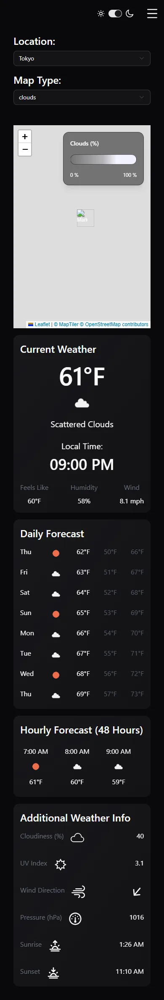

Responsive Design
Make the dashboard work from phone to wide screen with Tailwind breakpoints.
▶ Watch this part (04:38:22)Goal
"For almost this whole video, we've kind of just sat these cards in this super ugly looking column" (4:38:22). This is the longest chapter: about an hour in the video. The presenter makes the dashboard work on every screen size, from a phone to a large monitor, using Tailwind breakpoints. By the end:
- below 500 px a separate mobile header holds the hamburger button, and the dropdowns stack and go full width;
- below 1024 px the side panel is a drawer: closed by default, opened with the hamburger, sliding over the dashboard;
- from 1024 px the panel is always visible and the dashboard shrinks to make room for it;
- the cards use a CSS grid: one column on phones, two from 768 px, and a 4 × 4 layout that fills the screen from 1536 px.
You will touch many files, but most changes are class names. The main ones are src/App.tsx, src/index.css (a custom xs breakpoint and the --sidebar-width variable), a new src/components/MobileHeader.tsx, and small edits in SidePanel, Card, the forecast cards, the dropdowns, MapLegend, Map and the skeletons.
sm (640) and xl (1280) exist but aren't used.What the presenter explains
The tool (4:39:26): Chrome's dev tools have a "responsive mode" (the device toolbar) where "you can kind of just take the width and you can resize it. And you can see exactly how it looks at every possible screen size." The current width is shown at the top. The presenter later pops the dev tools out into their own window to get up to 1,600 px of room (4:56:29).
When should the panel collapse? (4:40:11) "Generally if you're using Tailwind breakpoints, the sidebar should collapse around the MD or LG breakpoint. So LG is 1024 and MD is 768." Because the dashboard has a lot to show, "let's err on the side of caution": below LG the panel is a drawer; from LG it is always on screen and not collapsible.
How to fit both side by side (4:41:37): "having some sort of CSS variable that controls the width of the actual side panel. And then when we're calculating the width of the dashboard, we just subtract the width of the side panel from it."
Mobile first (4:50:06): "sometimes it's easier to start with the small screen sizes and work your way up from there because technically that's the way that Tailwind is built. The default styles that you want at the smallest screen sizes, you don't put any breakpoint on them."
Why a grid (4:48:57): "that's using a grid. With a grid, we'll be able to change how many rows or columns each item takes up at different screen sizes."
Choosing 2xl for desktops (4:57:58): 1536 px "is the last built-in Tailwind breakpoint… Pretty much every computer device is going to be at least 1920x1080". (See the warning about display scaling below: that is not always true in CSS pixels.) The presenter sketches the desktop layout in Paint (4:58:43) and splits it into four columns and four rows.
Width, not height (5:33:01): "The big thing with responsive design is the width. That's why all the break points are width based… When you start worrying about the height, things get a little bit weirder."
New to responsive design and breakpoints? How sm:, md:, lg: work
Responsive design means one page that rearranges itself to fit the screen. CSS does it with media queries: "apply these rules only when the viewport is at least N pixels wide". Tailwind wraps them in prefixes. md:grid-cols-2 compiles to (verified with the locked Tailwind 4.1.15):
@media (width >= 48rem) { /* 48rem = 768px */
.md\:grid-cols-2 { grid-template-columns: repeat(2, minmax(0, 1fr)); }
}Default breakpoints: sm 640 px, md 768 px, lg 1024 px, xl 1280 px, 2xl 1536 px. Each means "this width and wider", never "only this size". So this is mobile-first: write the phone layout without prefixes, then override it for bigger screens. hidden xs:block reads "hidden, but from 500 px shown"; size-6 lg:hidden reads "visible, but from 1024 px hidden".
Widths are in CSS pixels, not physical screen pixels. A phone with a 1170-pixel-wide screen typically reports about 390 CSS pixels; a laptop with a 1920-pixel screen at 125% display scaling reports 1536.
New to CSS grid? Columns, spans and order
grid turns a container into a grid; grid-cols-4 makes four equal columns, grid-rows-4 four equal rows (equal only if the grid has a fixed height). Each child fills the next free cell, left to right, top to bottom. A child can take more than one cell: col-span-2 = two columns wide, row-span-2 = two rows tall. gap-4 puts 1rem between cells.
order-* changes the visual order without changing the JSX: children are placed by ascending order value. That lets the presenter swap two cards only at 2xl (5:04:27): "grids have a pretty convenient way to handle the ordering of things, especially at different screen sizes."
Suspense boundaries render no element, so they can't take a class. That's why the presenter wraps each <Suspense> in a div that becomes the grid item (4:51:56).
New to vw, dvw and calc()? Sizing against the viewport
100vw is the full viewport width. 100dvw is the dynamic viewport width; for width it is the same as vw in practice (the "dynamic" part matters for height on phones, where browser toolbars appear and disappear). calc(100dvw - var(--sidebar-width)) subtracts the panel width. In Tailwind you write arbitrary values in square brackets with no spaces: lg:w-[calc(100dvw-var(--sidebar-width))]; Tailwind adds the spaces around - for you.
New to sticky vs fixed? Two ways to keep a header in view
fixed (the side panel) removes the element from the flow and pins it to the window: other content slides under it, so you must add space for it yourself. sticky top-0 (the mobile header) keeps the element in the flow, taking up its own space, and only pins it when you scroll past it. The presenter (5:23:10): "sticky will make this header take up space in the DOM. So, I don't have to worry about shifting everything else down."
Step by step
- A width variable for the panel (4:42:02)
In
src/index.css, inside:root:--sidebar-width: 23rem;. InSidePanel.tsxreplacew-90withw-(--sidebar-width). - Make room for it from
lg(4:43:13–4:44:47)Dashboard
divinApp.tsx: addp-8 lg:w-[calc(100dvw-var(--sidebar-width))]. InMap.tsxchange the map's inline style width from"1000px"to"100%". - Panel always open from
lg, closed by default below (4:45:31–4:47:47)Add
lg:translate-x-0!to the panel,useState(false)inApp,lg:hiddenon the chevron and the hamburger. - Turn the cards into a grid (4:48:57–4:55:44)
Wrap map and cards in
<div className="grid grid-cols-1 gap-4">; wrap eachSuspensein adivwithcol-span-1; addmd:grid-cols-2andmd:col-span-2for the full-width items;md:pb-11onCurrentWeather's card. - The 2xl desktop layout (5:00:18–5:13:47)
2xl:grid-cols-4 2xl:grid-rows-4, spans andorderclasses,2xl:h-screenon the dashboard,2xl:flex-1 2xl:min-h-0on the grid, map containerh-120 2xl:h-autoand map style height"100%",AdditionalInfoasgrid grid-cols-1 md:grid-cols-2,2xl:h-fullonCard,2xl:flex-1on its children,2xl:justify-betweenand2xl:scale-110/2xl:size-10in the forecast cards. - Fix the header for small screens (5:15:39–5:21:17)
whitespace-nowrapon "Map Type:", label/dropdown pairsflex flex-col md:flex-row gap-2 md:gap-4, a customxsbreakpoint, header rowflex flex-col gap-4 xs:flex-row xs:gap-8, dropdownsw-full xs:w-[180px]. - A separate mobile header (5:21:39–5:28:29)
Hide the in-page hamburger below
xs(hidden xs:block), createMobileHeader.tsx, render it at the top ofApp, and change the dashboard's top padding topt-4 xs:pt-8. - Last fixes (5:28:51–5:36:01)
MapLegend:w-48 xs:w-96. Dashboard:2xl:min-h-[1120px]. Copy the new card classes into the matching skeletons.
The custom breakpoint and the width variable
Both live in src/index.css (the full file is shown in step 24). Line 19 is inside :root, line 55 inside @theme inline:
:root {
/* … */
--sidebar-width: 23rem;
/* … */
}
@theme inline {
--breakpoint-xs: 500px;
/* … */
}| Line(s) | Code | What it does & why |
|---|---|---|
| 19 | --sidebar-width: 23rem; | A plain CSS custom property on the root element: 23rem = 368 px. Every element can read it with var(--sidebar-width). Used twice: as the panel's width (w-(--sidebar-width)) and subtracted from the dashboard's width. Change it here and both stay in sync. |
| 54 | @theme inline { | Tailwind v4's CSS-first configuration: variables in @theme create utilities and variants. (In v3 this lived in tailwind.config.js.) shadcn created this block in step 12. |
| 55 | --breakpoint-xs: 500px; | Any --breakpoint-NAME creates a NAME: prefix. This adds xs: = "500 px and wider", because "there's no breakpoint below 640" (5:18:38). Tailwind sorts it before md automatically: in the production CSS the media queries appear as 500px, 48rem, 64rem, 96rem (checked in the built file). |
Try the video's version: three ways to write the panel width
At 4:42:27 the presenter tried a few spellings before landing on the Tailwind v4 shorthand ("I keep forgetting this new Tailwind 4 syntax"). We compiled each one with the project's Tailwind 4.1.15:
| Class | Generated CSS | Result |
|---|---|---|
w-(var(--sidebar-width)) (seen in the video) | nothing | No width: the panel shrinks to its content. |
w-[--sidebar-width] (the v3 shorthand) | width: --sidebar-width; | Invalid CSS; the browser ignores it. |
w-[var(--sidebar-width)] | width: var(--sidebar-width); | Works. |
w-(--sidebar-width) (repo) | width: var(--sidebar-width); | Works. In v4, round brackets mean "this is a CSS variable, wrap it in var()". |
The final App.tsx
import DailyForecast from "./components/cards/DailyForecast"
import HourlyForecast from "./components/cards/HourlyForecast"
import CurrentWeather from "./components/cards/CurrentWeather"
import AdditionalInfo from "./components/cards/AdditionalInfo"
import Map from "./components/Map"
import { Suspense, useState } from "react"
import type { Coords } from "./types"
import LocationDropdown from "./components/dropdowns/LocationDropdown"
import { useQuery } from "@tanstack/react-query"
import { getGeocode } from "./api"
import MapTypeDropdown from "./components/dropdowns/MapTypeDropdown"
import MapLegend from "./components/MapLegend"
import CurrentSkeleton from "./components/skeletons/CurrentSkeleton"
import DailySkeleton from "./components/skeletons/DailySkeleton"
import HourlySkeleton from "./components/skeletons/HourlySkeleton"
import AdditionalInfoSkeleton from "./components/skeletons/AdditionalInfoSkeleton"
import SidePanel from "./components/SidePanel"
import Hamburger from "/src/assets/hamburger.svg?react"
import MobileHeader from "./components/MobileHeader"
import LightDarkToggle from "./components/LightDarkToggle"
function App() {
const [coordinates, setCoords] = useState<Coords>({ lat: 50, lon: 45 })
const [location, setLocation] = useState("Tokyo")
const [mapType, setMapType] = useState("clouds_new")
const [isSidePanelOpen, setIsSidePanelOpen] = useState(false)
const { data: geocodeData } = useQuery({
queryKey: ["geocode", location],
queryFn: () => getGeocode(location),
})
const onMapClick = (lat: number, lon: number) => {
setCoords({ lat, lon })
setLocation("custom")
}
const coords =
location === "custom"
? coordinates
: { lat: geocodeData?.[0].lat ?? 0, lon: geocodeData?.[0].lon ?? 0 }
return (
<>
<MobileHeader setIsSidePanelOpen={setIsSidePanelOpen} />
<div className="flex flex-col gap-8 pt-4 p-8 xs:pt-8 lg:w-[calc(100dvw-var(--sidebar-width))] 2xl:h-screen 2xl:min-h-[1120px]">
<div className="flex flex-col gap-4 xs:flex-row xs:gap-8">
<div className="flex flex-col md:flex-row gap-2 md:gap-4">
<h1 className="text-2xl font-semibold">Location: </h1>
<LocationDropdown location={location} setLocation={setLocation} />
</div>
<div className="flex flex-col md:flex-row gap-2 md:gap-4">
<h1 className="text-2xl font-semibold whitespace-nowrap">
Map Type:{" "}
</h1>
<MapTypeDropdown mapType={mapType} setMapType={setMapType} />
</div>
<div className="ml-auto flex gap-4 items-center">
<div className="hidden xs:block">
<LightDarkToggle />
</div>
<button
onClick={() => setIsSidePanelOpen(true)}
className="hidden xs:block"
>
<Hamburger className="size-6 lg:hidden" />
</button>
</div>
</div>
<div className="grid grid-cols-1 2xl:flex-1 2xl:min-h-0 md:grid-cols-2 2xl:grid-cols-4 2xl:grid-rows-4 gap-4">
<div className="relative h-120 2xl:h-auto col-span-1 md:col-span-2 2xl:col-span-4 2xl:row-span-2 order-1">
<Map coords={coords} onMapClick={onMapClick} mapType={mapType} />
<MapLegend mapType={mapType} />
</div>
<div className="col-span-1 2xl:row-span-2 order-2">
<Suspense fallback={<CurrentSkeleton />}>
<CurrentWeather coords={coords} />
</Suspense>
</div>
<div className="col-span-1 order-3 2xl:order-4 2xl:row-span-2">
<Suspense fallback={<DailySkeleton />}>
<DailyForecast coords={coords} />
</Suspense>
</div>
<div className="col-span-1 md:col-span-2 2xl:row-span-1 order-4 2xl:order-3">
<Suspense fallback={<HourlySkeleton />}>
<HourlyForecast coords={coords} />
</Suspense>
</div>
<div className="col-span-1 md:col-span-2 2xl:row-span-1 order-5">
<Suspense fallback={<AdditionalInfoSkeleton />}>
<AdditionalInfo coords={coords} />
</Suspense>
</div>
</div>
</div>
<SidePanel
coords={coords}
isSidePanelOpen={isSidePanelOpen}
setIsSidePanelOpen={setIsSidePanelOpen}
/>
</>
)
}
export default App
// styling - Tailwind
// data fetching - TanStack Query (React Query)Line by line (the parts this step changed)
| Line(s) | Code | What it does & why |
|---|---|---|
| 17 | import SidePanel from "./components/SidePanel" | From step 20. |
| 18 | import Hamburger from "/src/assets/hamburger.svg?react" | The three-line menu icon as a component (svgr), added at 4:27:43. |
| 19 | import MobileHeader from "./components/MobileHeader" | New in this step. |
| 20 | import LightDarkToggle from "./components/LightDarkToggle" | Step 24. |
| 26 | const [isSidePanelOpen, setIsSidePanelOpen] = useState(false) | Was true in step 20. false means: below 1024 px the panel starts closed (4:46:16). From 1024 px the value is ignored because lg:translate-x-0! forces the panel open. A side effect: if you close the panel on a small window and then widen it, it opens; narrow it again and it is closed again, because the state is still false. |
| 43–44, 102 | return ( <> … </> | A fragment holding three siblings: the mobile header, the dashboard, the side panel. |
| 45 | <MobileHeader setIsSidePanelOpen={setIsSidePanelOpen} /> | Rendered first so it is at the top. It only needs the setter (its button only opens). It hides itself from xs up. |
| 46 | <div className="flex flex-col gap-8 pt-4 p-8 xs:pt-8 lg:w-[calc(100dvw-var(--sidebar-width))] 2xl:h-screen 2xl:min-h-[1120px]"> | The dashboard. flex flex-col gap-8: header row above grid, 2rem apart. p-8: 2rem padding all round; pt-4 overrides only the top to 1rem because on phones the sticky mobile header is already above (5:28:04, "PT4 is going to override P8"); xs:pt-8 restores 2rem from 500 px. lg:w-[…]: the subtraction above. 2xl:h-screen: exactly the window height on desktops, so the 4 rows can share it. 2xl:min-h-[1120px]: but never shorter than 1120 px; on a short window the page scrolls instead of squeezing the cards (5:32:37). |
| 47 | <div className="flex flex-col gap-4 xs:flex-row xs:gap-8"> | The header row (dropdowns, toggle, hamburger). Stacked with 1rem gaps below 500 px; a row with 2rem gaps from 500 px (5:19:25). |
| 48, 52 | <div className="flex flex-col md:flex-row gap-2 md:gap-4"> | Each "label + dropdown" pair: label above the dropdown with 0.5rem gap on small screens; side by side with 1rem gap from 768 px (5:17:10). |
| 53–55 | <h1 className="text-2xl font-semibold whitespace-nowrap">Map Type:{" "}</h1> | whitespace-nowrap stops "Map Type:" from breaking onto two lines (5:16:01). |
| 58 | <div className="ml-auto flex gap-4 items-center"> | Holds the toggle and the hamburger. ml-auto (margin-left: auto) pushes it to the far right of the row (5:39:23). |
| 59–61 | <div className="hidden xs:block"><LightDarkToggle /></div> | Step 24: the toggle is hidden on phones (it moves into MobileHeader) and shown from 500 px. |
| 62–67 | <button onClick={() => setIsSidePanelOpen(true)} className="hidden xs:block"><Hamburger className="size-6 lg:hidden" /></button> | The in-page hamburger. Only opens. The button is hidden below 500 px (the mobile header has its own), the icon is hidden from 1024 px (the panel can't be closed there). Icon shrunk from size-8 to size-6 (5:15:39). Note: from 1024 px the empty button is still there, just invisible and 0 px wide. |
| 70 | <div className="grid grid-cols-1 2xl:flex-1 2xl:min-h-0 md:grid-cols-2 2xl:grid-cols-4 2xl:grid-rows-4 gap-4"> | The grid. 1 column, 2 from md, 4 × 4 from 2xl; 1rem gaps. 2xl:flex-1: take all the height left in the dashboard after the header row; 2xl:min-h-0: allow it to be smaller than its content (see the diagram below). The order of classes doesn't matter; Tailwind sorts the generated CSS by breakpoint. |
| 71–74 | <div className="relative h-120 2xl:h-auto col-span-1 md:col-span-2 2xl:col-span-4 2xl:row-span-2 order-1"> | The map item. relative: the legend is absolute inside it (step 18). h-120 = 30rem = 480 px, because the map's height is now 100% and needs a parent with a height (5:06:20); 2xl:h-auto lets the grid row decide on desktops. Always full width (1, 2 or 4 columns), and the top two rows at 2xl. order-1: first. |
| 75–79 | <div className="col-span-1 2xl:row-span-2 order-2"> + Current | Current weather: one column; two rows tall on desktops (the left column under the map). |
| 80–84 | <div className="col-span-1 order-3 2xl:order-4 2xl:row-span-2"> + Daily | Daily forecast: next to Current at md. At 2xl it becomes 4th in order and two rows tall: the right column. |
| 85–89 | <div className="col-span-1 md:col-span-2 2xl:row-span-1 order-4 2xl:order-3"> + Hourly | Hourly: full width at md (2 of 2 columns). At 2xl still 2 columns wide (of 4, the md class keeps applying), one row tall, and 3rd in order so it fills the middle top. |
| 90–94 | <div className="col-span-1 md:col-span-2 2xl:row-span-1 order-5"> + Additional | Additional info: same width rules, one row, last: the middle bottom cell. The presenter noticed (5:03:42) that a 2xl:col-span-2 isn't needed because md:col-span-2 "will still apply to the 2XL breakpoint". |
| 97–101 | <SidePanel coords={coords} isSidePanelOpen={isSidePanelOpen} setIsSidePanelOpen={setIsSidePanelOpen} /> | Outside the dashboard div: it is fixed anyway, and keeping it out of the grid is clearer. |
| 108–109 | // styling - Tailwind … | Notes left from the beginning of the video; harmless comments. |
The grid at each breakpoint
MobileHeader; from 500 px they move into the page's own header row. Between 500 and 767 px the label and dropdown of each pair are still stacked (md:flex-row starts at 768).order sequence. Swapping only the two order values at 2xl puts Hourly in the middle top cell and Daily in the right column, without changing the JSX or the phone layout.min-height: auto (never smaller than their content); min-h-0 removes that floor, so flex-1 can make the grid exactly as tall as the space left. In a row layout the same trick is min-w-0.The mobile header
import type { Dispatch, SetStateAction } from "react"
import Hamburger from "/src/assets/hamburger.svg?react"
import LightDarkToggle from "./LightDarkToggle"
type Props = {
setIsSidePanelOpen: Dispatch<SetStateAction<boolean>>
}
export default function MobileHeader({ setIsSidePanelOpen }: Props) {
return (
<div className="w-full h-16 p-4 bg-background sticky top-0 xs:hidden flex gap-8 justify-end z-1001">
<LightDarkToggle />
<button onClick={() => setIsSidePanelOpen(true)}>
<Hamburger className="size-6" />
</button>
</div>
)
}Line by line
| Line(s) | Code | What it does & why |
|---|---|---|
| 1 | import type { Dispatch, SetStateAction } from "react" | The setter type, as in SidePanel. |
| 2 | import Hamburger from "/src/assets/hamburger.svg?react" | Same icon import as in App (copied at 5:23:55). |
| 3 | import LightDarkToggle from "./LightDarkToggle" | Added in step 24 (5:59:37). |
| 5–7 | type Props = { setIsSidePanelOpen: Dispatch<SetStateAction<boolean>> } | Only the setter: this header never needs to know whether the panel is open. |
| 9 | export default function MobileHeader({ setIsSidePanelOpen }: Props) { | Destructured in the parameter, since it is used directly. |
| 11 | <div className="w-full h-16 p-4 bg-background sticky top-0 xs:hidden flex gap-8 justify-end z-1001"> | w-full h-16 p-4: full width, 4rem (64 px) tall, 1rem padding. bg-background: the page colour, so content scrolling under it is hidden (the presenter tried bg-red-500 briefly to see it, 5:24:40). sticky top-0: stays at the top while scrolling. xs:hidden: gone from 500 px. flex gap-8 justify-end: toggle and hamburger in a row, 2rem apart, pushed to the right (replacing ml-auto, 5:25:25). z-1001: above the map when it scrolls under the header. |
| 12 | <LightDarkToggle /> | The theme switch on phones (step 24). |
| 13–15 | <button onClick={() => setIsSidePanelOpen(true)}><Hamburger className="size-6" /></button> | Opens the drawer. No lg:hidden needed: the whole header is already hidden from 500 px. |
Try the video's version: the first mobile header (5:24:19)
import Hamburger from "/src/assets/hamburger.svg?react"
type Props = {}
export default function MobileHeader({}: Props) {
return (
<div className="w-full h-16 p-4 bg-background sticky top-0 xs:hidden">
<button
// onClick={() => setIsSidePanelOpen(true)}
>
<Hamburger className="size-6 invert" />
</button>
</div>
)
}Renders a non-working hamburger at the top left. Then the presenter adds flex justify-end z-1001, uncomments onClick, types the prop and passes setIsSidePanelOpen from App (5:26:31–5:27:19). invert goes away in step 24.
Other files touched in this step
| File | Change (final value) | Why |
|---|---|---|
SidePanel.tsx | w-(--sidebar-width), lg:translate-x-0!, chevron lg:hidden | Width from the variable; always open from 1024 px; no close button where it can't close. |
Map.tsx | style={{ width: "100%", height: "100%" }} (line 21) | Was "1000px" and "500px"; now the map fills its grid item (4:44:23, 5:02:11). |
cards/Card.tsx | outer 2xl:h-full, children 2xl:flex-1 | Cards fill their grid cell; the content area fills the card (5:10:47, 5:11:31). |
cards/CurrentWeather.tsx | card className="md:pb-11", children … 2xl:justify-between | Extra bottom padding so Current is as tall as Daily at md ("a band-aid fix", 4:54:56); spread content vertically on desktops. |
cards/DailyForecast.tsx | children flex flex-col gap-4 2xl:justify-between | Rows spread over the full card height. |
cards/HourlyForecast.tsx | per hour 2xl:justify-between, text 2xl:scale-110, icon 2xl:size-10 | Fill the taller desktop card; slightly larger text and icons (5:12:40–5:13:47). |
cards/AdditionalInfo.tsx | grid grid-cols-1 md:grid-cols-2 gap-8 | Six rows become 2 columns × 3 rows from 768 px, because the card is wide and short (5:07:26). |
dropdowns/LocationDropdown.tsx, MapTypeDropdown.tsx | w-full xs:w-[180px] | Full-width dropdowns on phones, 180 px from 500 px (5:20:54). |
MapLegend.tsx | w-48 xs:w-96 | The legend was too big for a phone map: 12rem below 500 px, 24rem above (5:28:51). |
| skeletons | same classes as their cards | "If we don't make these components match one to one… we can get some weird mismatch problems" (5:33:45). CurrentSkeleton's md:pb-11 was forgotten and added in step 24 (5:57:42). |
Try the video's versions: the layout in stages
Each block shows the key classes at a moment of the video, transcribed from the frames (not separately built). Apply them to the final files to reproduce the stage.
<div className="flex flex-col gap-8 p-8 w-full lg:w-[calc(100dvw-var(--sidebar-width))]">w-full was removed later (5:25:47) while chasing a sideways-scrolling bug that turned out to be a dev-tools glitch ("I closed and reopened the responsive dev tools and now it's working perfectly fine").
<div className="grid grid-cols-1 md:grid-cols-2 gap-4">
<div className="relative col-span-1 md:col-span-2"> {/* Map + MapLegend */}
<div className="col-span-1"> {/* Current */}
<div className="col-span-1"> {/* Daily, moved above Hourly */}
<div className="col-span-1 md:col-span-2"> {/* Hourly */}
<div className="col-span-1 md:col-span-2"> {/* Additional */}At this stage the presenter physically moved the Daily div above Hourly so Current and Daily share a row. In the final file the JSX order is the same, and order-* classes handle the desktop swap.
<div className="grid grid-cols-1 flex-1 min-h-0 md:grid-cols-2 2xl:grid-cols-4 2xl:grid-rows-4 gap-4">Then (5:10:02) the presenter prefixes both with 2xl: "because we've already got the smaller screen sizes looking good. I wouldn't want to regress".
<div className="flex flex-col md:flex-row gap-2 md:gap-4"> {/* was "flex gap-8", holding both pairs and the hamburger */}That first attempt put everything in a column below 768 px, including the hamburger, which ended up off screen. With the xs breakpoint the classes were split: the outer row got flex flex-col gap-4 xs:flex-row xs:gap-8 and each pair got the md: classes.


What you should see
Open dev tools, switch on the device toolbar and drag the width from small to large: below 500 px a slim header with the switch and hamburger at the top, dropdowns stacked full width; at 500 the header moves into the page; at 768 Current and Daily sit side by side and labels sit next to their dropdowns; at 1024 the panel slides in and stays, chevron and hamburger disappear; at 1536 the map takes the top half of the screen and the four cards the bottom half, with no page scroll on a tall window. Below 1024 px the hamburger opens the panel over the dashboard and the chevron slides it away.
Common mistakes
- Thinking
md:means "medium screens only": it means 768 px and up. To style only below a size, put the style without a prefix and undo it with the prefix (flex-col md:flex-row), or use Tailwind v4'smax-md:. - The panel won't open on a phone:
translate-x-fullbeatstranslate-x-0? Check theclsxcondition. On a desktop it can't close: that is intended (lg:translate-x-0!). - Forgetting the
!inlg:translate-x-0!: with the statefalse, bothtranslate-x-fullandlg:translate-x-0set the same property; the important flag guarantees the lg one wins. - Map with zero height: after switching the map style to
height: "100%", its container needs a height (h-120) below 2xl. - Grid overflowing the screen at 2xl:
flex-1withoutmin-h-0. - A custom breakpoint that does nothing: it must be inside
@themeand named--breakpoint-…. A typo such as--breakpoints-xssilently creates nothing. - Odd behaviour only in the device toolbar: the presenter saw a sideways scroll and a non-sticky header that vanished after reopening the responsive dev tools (5:26:08). Test in a real resized window or a real phone before you hunt a bug.
About "every computer is 1920 wide" and the 1120 px minimum
- Breakpoints use CSS pixels. Many laptops with a 1920 × 1080 panel run at 125% or 150% display scaling, which gives a browser width of 1536 or 1280 CSS pixels; with the browser not maximised, or a vertical scrollbar, the width is smaller still. So many laptop users will see the
lgtwo-column layout, not the 2xl one. Both work; just don't design the 2xl layout as the only "desktop" view. 2xl:min-h-[1120px]: on a 1080-pixel-tall monitor, the browser's visible area (minus tabs and address bar) is usually well under 1120 px, so the desktop layout will scroll a little there. That is the intended fallback ("we'll just have to overflow"), but it means the "fits on one screen" layout mostly appears on taller screens.
Video vs repo
The repo matches the end of the video. Steps that came later and are already in the repo files: the LightDarkToggle in App (wrapped in hidden xs:block) and in MobileHeader, and md:pb-11 in CurrentSkeleton (all step 24). The panel has no backdrop and no Escape key to close it on small screens, and keyboard focus can still move into the closed panel; ideas for improvement, not covered in the video.
- Tailwind is mobile-first: unprefixed classes for phones, then
xs:(custom, 500 px),md:(768),lg:(1024),2xl:(1536) add changes upwards. --breakpoint-xs: 500pxin@themecreates thexs:prefix;--sidebar-width: 23remsizes the panel and is subtracted from the dashboard withlg:w-[calc(100dvw-var(--sidebar-width))].- Below lg the panel is a drawer (
useState(false), hamburger and chevron); from lg it is forced open withlg:translate-x-0!. - The cards are a grid: 1 column, 2 from md, 4 × 4 from 2xl with spans and
orderswaps;2xl:h-screen,2xl:flex-1 2xl:min-h-0and2xl:h-fullmake it fill the screen. - Below 500 px a sticky
MobileHeaderholds the hamburger (and, after step 24, the theme switch).